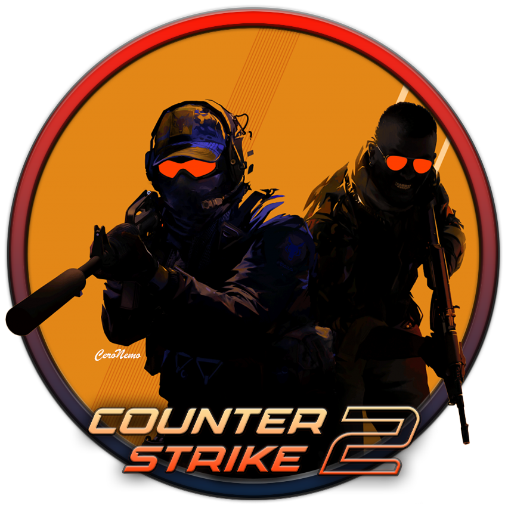
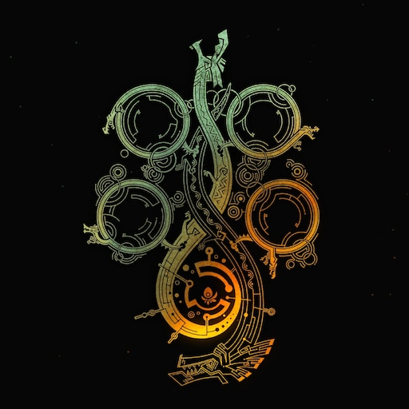

Вітаємо у розділі «Список ігор»!
Тут ви знайдете добірку найкращих, найпопулярніших ігор, що вже вийшли, а також тих, що тільки очікуються.
Кожна гра в нашому каталозі містить детальний опис, інформацію про жанр, розробників, особливості геймплею та системні вимоги.
На цій сторінці ви знайдете:
Індустрія відеоігор постійно змінюється, і кожен рік виходять нові хіти. Ось список ігор, які стали культовими та заслуговують вашої уваги:
The Witcher 3: Wild Hunt (2015)

- Жанр:RPG
- Платформи: PC, PS4, PS5, Xbox One, Xbox Series X/S, Nintendo Switch
- Про що гра?У цій грі гравці беруть на себе роль Геральта з Рівії – мисливця на монстрів,
який подорожує фентезійним світом у пошуках своєї прийомної доньки Цірі, переслідуваної
таємничими вершниками Дикого Гону. У грі вас чекає величезний відкритий світ,
повний міст, селищ, лісів і боліт, а також інтригуючий сюжет із глибокими моральними виборами.
- Оцінка: 10/10
Cyberpunk 2077: Phantom Liberty (2023)

- Жанр: RPG, екшен
- Платформи: PC, PS5, Xbox Series X/S
- Про що гра? Cyberpunk 2077 переносить гравців у похмуре та яскраве місто майбутнього – Найт-Сіті,
де технології та людські пороки переплелися в небезпечному балансі.
Ви граєте за V – найманця, який шукає безсмертя, маючи у своєму мозку штучний інтелект
у вигляді цифрової особистості Джонні Сільверхенда (Кіану Рівз).
- Оцінка: 9/10
Red Dead Redemption 2 (2018)

- Жанр: Пригодницький екшен
- Платформи: PC, PS4, Xbox One
- Про що гра? Ця гра – не просто шутер чи пригодницька гра, а справжній інтерактивний вестерн
із глибоким сюжетом та максимально реалістичним світом.
Ви граєте за Артура Моргана – досвідченого злочинця та члена банди Ван дер Лінде.
Події відбуваються у 1899 році, коли епоха Дикого Заходу добігає кінця.
Вам доведеться приймати важкі рішення, які впливатимуть на долю персонажа та всієї банди.
Гра пропонує повну свободу дій: ви можете грабувати поїзди, виконувати завдання, ловити злочинців
або просто блукати величезним відкритим світом.
- Оцінка: 10/10
Counter-Strike 2 (CS2) – 2023

- Жанр: Тактичний шутер
- Платформи: PC
- Про що гра? Counter-Strike 2 – це довгоочікуване продовження культової Counter-Strike: Global Offensive,
яке працює на оновленому рушії Source 2. Гра зберігає класичний тактичний геймплей,
де дві команди – терористи та контр-терористи – змагаються у виконанні завдань,
таких як встановлення/знешкодження бомби або порятунок заручників.
- Оцінка: 9.5/10
Світ відеоігор не стоїть на місці, і попереду нас чекають масштабні релізи, які обіцяють новий рівень занурення, графіки та геймплею.
Ось добірка найочікуваніших ігор, що вже привернули увагу геймерів і критиків!
Grand Theft Auto VI (GTA 6)

- Жанр: Відкритий світ, екшен
- Платформи: PS5, Xbox Series X/S (PC – дата невідома)
- Дата виходу: 2025
- Про що гра?Rockstar Games готує, можливо, найочікуванішу гру десятиліття!
Дія GTA 6 розгортається у величезному мегаполісі Вайс-Сіті, натхненному сучасним Маямі.
Гравці вперше отримають двох головних персонажів – Лусію та її партнера, що нагадує дует Бонні та Клайда.
Assassin's Creed Shadows

- Жанр: Пригодницький екшн
- Платформи: PS5, Xbox Series X/S, PC
- Дата виходу: 2025
- Про що гра? Assassin's Creed Shadows відправить гравців у нову історичну епоху — середньовіччя Японії,
де вони стануть частиною секретної організації асасинів. Оновлена механіка паркура,
нові техніки бою та можливість впливати на хід історії роблять гру ще більш захоплюючою.
Doom: The Dark Ages

- Жанр: Шутер від першої особи
- Платформи: PlayStation 5, Xbox Series X/S, PC
- Дата виходу: Травень 2025
- Про що гра? The Dark Ages є приквелом до відомої серії Doom і переносить гравців у середньовіччя,
де технології і магія переплітаються. В серії обіцяють брутальну атмосферу,
де гравець зіткнеться з новими чудовиськами і демонічними істотами, що виникають з темних часів.
Monster Hunter Wilds

- Жанр: Екшн-RPG
- ПЛатформи: PC, PlayStation 5, Xbox Series X/S
- Дата виходу: Лютий 2025
- Про що гра? Мисливець, який вирушає в незаселені землі, щоб відшукати учених із загубленої експедиції. Гра від Capcom спробує масштабувати успіх, якого досягнув Monster Hunter: World у 2018 році.
Щоб вам було легше знайти цікаву гру, ми розподілили ігри за жанрами:
- RPG(Рольові ігри) -це ігри, де гравець керує персонажем, розвиваючи його навички,
взаємодіючи з іншими персонажами та виконуючи квести.
Часто ці ігри мають великий світ для дослідження та складну сюжетну лінію.
- Elden Ring
- Baldur’s Gate 3
- Cyberpunk 2077
- The Witcher 3
- Шутери - це ігри, де основний акцент зроблений на стрільбу та бойові сцени.
Вони поділяються на шутери від першої особи (FPS) і третьої особи (TPS).
У цих іграх важливу роль відіграє реакція, тактика та стратегія у боях:
- Call of Duty: MW3
- Battlefield 2042
- Doom Eternal
- Halo Infinite
- CS2
- Гонки – це ігри, що зосереджуються на швидкості та керуванні транспортними засобами.
Вони можуть бути як реалістичними, так і аркадними.
- Forza Horizon 5
- Gran Turismo 7
- Need for Speed Unbound
- Інді-ігри – це проекти, створені невеликими студіями або окремими розробниками.
Вони часто мають унікальний стиль, інноваційний підхід до геймплею та сюжету.
- Hades
- Celeste
- Stardew Valley
- Hollow Knight
- Стратегії – це ігри, в яких гравець керує ресурсами, приймає стратегічні рішення та планує бойові дії.
Стратегії можуть бути покроковими (TBS) або реального часу (RTS).
- Age of Empires IV
- Civilization VI
- Total War: Warhammer III
- Пригодницькі ігри — це жанр, де акцент робиться на сюжет, розгадування головоломок, дослідження та взаємодію з персонажами.
Вони можуть включати елементи екшн-гри та інтерактивного кіно.
- Red Dead Redemption 2
- Horizon Zero Dawn
- The Last of Us Part II
{kind=link}